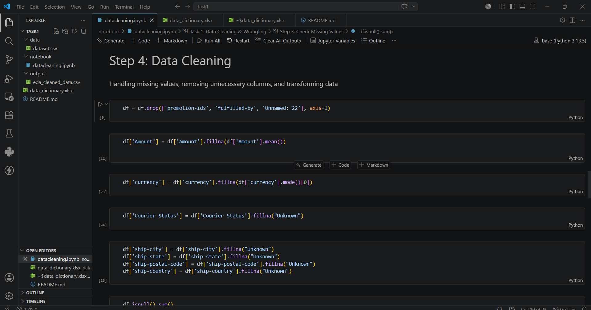
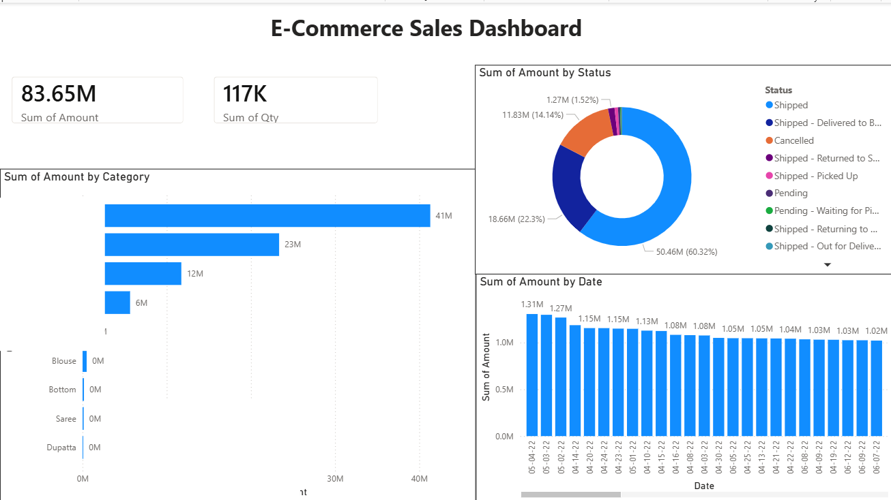
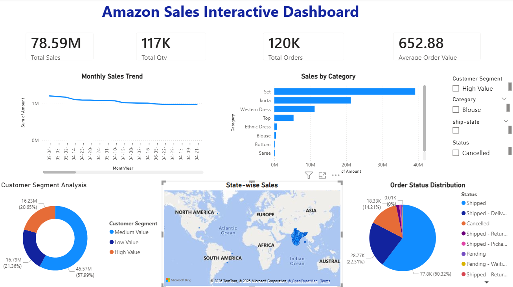
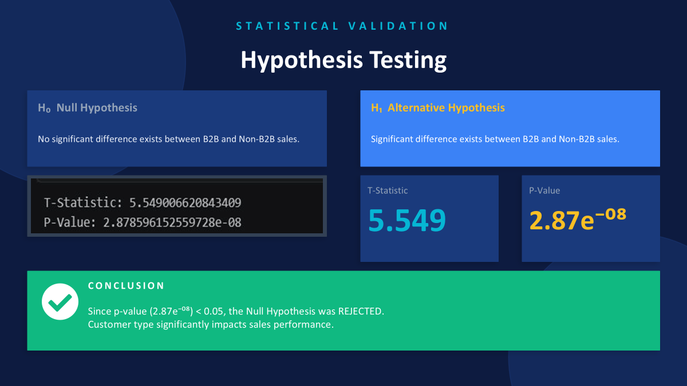

MCA Student at Sir M Visvesvaraya Institute Of Technology
Transforming Data into Actionable Insights using Python, Power BI, Excel and Statistical Analytics.
I am an MCA student passionate about Data Analytics, Business Intelligence and Data Visualization. During my 60-day internship at ApexPlanet Software Pvt Ltd, I worked on data cleaning, exploratory data analysis, dashboard development and statistical validation using Python, Power BI and Excel.
ApexPlanet Software Pvt Ltd
Data Analyst Intern
60 Days
Amazon E-Commerce Sales Dataset
Tasks Completed
Records Analyzed
Days Internship
GitHub Repositories

Tools: Python, Pandas, Excel
Cleaned and prepared the Amazon E-Commerce dataset by handling missing values, removing unnecessary columns and transforming the dataset for analysis.
View GitHub Repository
Tools: Python, Matplotlib, Seaborn
Performed exploratory data analysis to identify trends, patterns and business insights from the Amazon sales dataset.
View GitHub Repository
Tools: Power BI, Excel
Built interactive dashboards with KPI tracking, customer segmentation and sales analysis.
View GitHub Repository
Tools: Python, Statistics
Applied hypothesis testing and statistical analysis to derive business recommendations.
View GitHub RepositoryEmail: vanithavani.p26@gmail.com